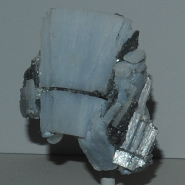

|

| CaSO4
These samples of acanthite are displayed in the Smithsonian Museum of Natural History. Anhydrite is a sulfate mineral of calcium with the composition CaSO4. The sample at left is about 5 cm across and is from Naica, Chihuahua, Mexico.
The name anhydrite, or "no water" alludes to the fact that there is no water in the structure, in contrast to gypsum, which is also calcium sulfate but incorporates water in its structure.
|